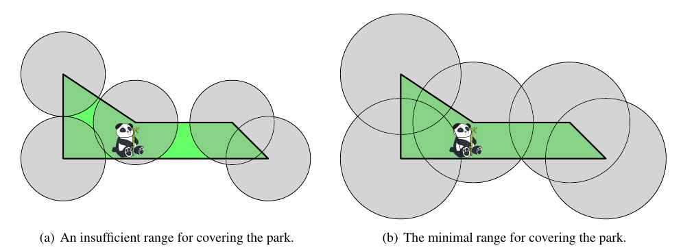

给定一个简单多边形 $P = P_1 P_2 \cdots P_n$，求最小的正实数 $r$，使得 $\odot \left( P_1, r \right) \cup \odot \left( P_2, r \right) \cup \cdots \cup \odot \left( P_n, r \right)$ 覆盖多边形 $P$。
第一行包含一个正整数 $n$ ($3 \leq n \leq 200$)，表示多边形的点数。
接下来 $n$ 行，每行两个整数 $x_i, y_i$ ($-10^6 \leq x_i, y_i \leq 10^6$)，描述多边形的一个顶点，所有顶点以逆时针顺序给出。保证给出的多边形为简单多边形。
输出一行一个实数，表示 $r$ 的最小可能值。答案被认为正确当且仅当相对或绝对误差不超过 $10^{-6}$。
考虑一个 $r$ 可行的充要条件 —— 对于任意内点 $A \in P$，均有 $\min \left\{ \left| A P_1 \right|, \left| A P_2 \right|, \cdots, \left| A P_n \right| \right\} \leq r$。
因此，我们要求的答案实际上就是上面那么 $\min$ 的最大值，即 $$ \color {fuchsia} {\max_{A \in P} \min \left\{ \left| A P_1 \right|, \left| A P_2 \right|, \cdots, \left| A P_n \right| \right\}} \tag 1 \label 1 $$
不妨设 $\left| A P_i \right| = \min \left\{ \left| A P_1 \right|, \left| A P_2 \right|, \cdots, \left| A P_n \right| \right\}$，则这样的 $A$ 的范围是关于 $P_1, P_2, \cdots, P_n$ 的 Voronoi 图 (下记作 $V$) 中 $P_i$ 所在的区域中。
考虑它所在的区域和多边形 $P$ 的交，显然它也是一个多边形 $Q$。那么，我们只需考虑 $Q$ 中距离 $P_i$ 最远的点 (作为 $A$) —— 由线段的凸性知它一定是 $Q$ 的某个顶点。
于是我们只需要求出 $Q$ 的所有顶点即可，使用这些点到 $P_i$ 的距离进行更新；回到整张图，即对于每个 $i = 1, 2, \cdots, n$，找到 $V$ 中 $P_i$ 所在的区域与 $P$ 的交，然后对交中的所有顶点进行更新。
先考虑这样的顶点的数量：首先，$Q$ 中的顶点可以分为三类：
由于 Voronoi 图的点数是 $O \left( n \right)$ 的 (由对偶性知 Voronoi 图的点数等于 Delaunay 三角剖分的三角形数，而 Delaunay 三角剖分是平面图，面数关于点数呈线性关系)，因此前两类顶点的数量是 $O \left( n \right)$ 的；又每两条线段至多有一个交点，于是第三类顶点的数量是 $O \left( n^2 \right)$ 的。
考虑具体的算法。首先，由于 $n \leq 2000$，我们并不需要实现一个 $O \left( n \log n \right)$ 的 Voronoi 图，只需要暴力半平面交用 $O \left( n^2 \log n \right)$ 实现即可；然后对于三类顶点的处理方法如下：
故总时间复杂度 $O \left( n^2 \log n \right)$。
#include <bits/stdc++.h>
using std::cin;
using std::cout;
typedef long long ll;
typedef __int128 lll;
const int N = 2054;
constexpr double eps = 1e-8;
#define lt(x, y) ((x) < (y) - eps)
#define gt(x, y) ((x) > (y) + eps)
#define le(x, y) ((x) <= (y) + eps)
#define ge(x, y) ((x) >= (y) - eps)
#define eq(x, y) (le(x, y) && ge(x, y))
#define dot(x, y, z) (((y) - (x)) * ((z) - (x)))
#define cross(x, y, z) (((y) - (x)) ^ ((z) - (x)))
struct rational {
int num, den;
rational () {}
rational (int numerator, int denominator) : num(numerator), den(denominator) {}
inline bool operator < (const rational &B) const {return (ll)num * B.den < (ll)den * B.num;}
inline bool operator == (const rational &B) const {return (ll)num * B.den == (ll)den * B.num;}
inline double to_double() {return (double)num / (double)den;}
};
struct ivec2 {
rational x, y;
ivec2 () {}
ivec2 (rational x0, rational y0) : x(x0), y(y0) {}
inline bool operator < (const ivec2 &B) const {return x < B.x || (x == B.x && y < B.y);}
operator bool () const {return x.num || y.num;}
} q[N], ich[N];
struct vec2 {
double x, y;
vec2 (double x0 = 0.0, double y0 = 0.0) : x(x0), y(y0) {}
inline vec2 operator + (const vec2 &B) const {return vec2(x + B.x, y + B.y);}
inline vec2 operator - (const vec2 &B) const {return vec2(x - B.x, y - B.y);}
inline vec2 operator * (double k) const {return vec2(x * k, y * k);}
inline vec2 operator / (double k) const {return *this * (1.0 / k);}
inline double operator * (const vec2 &B) const {return x * B.x + y * B.y;}
inline double operator ^ (const vec2 &B) const {return x * B.y - y * B.x;}
inline double norm2() const {return x * x + y * y;}
inline bool operator < (const vec2 &B) const {return lt(x, B.x) || (le(x, B.x) && lt(y, B.y));}
} p[N], ch[N], ic[N];
struct line {
double A, B, C;
line (double A0 = 0.0, double B0 = 0.0, double C0 = 0.0) : A(A0), B(B0), C(C0) {}
line (const vec2 &u, const vec2 &v) : A(u.y - v.y), B(v.x - u.x), C(u ^ v) {} // left > 0
inline vec2 normVec() const {return vec2(A, B);}
inline double norm2() const {return A * A + B * B;}
inline double operator () (const vec2 &P) const {return A * P.x + B * P.y + C;}
};
inline vec2 intersection(const line u, const line v) {return vec2(u.B * v.C - u.C * v.B, u.C * v.A - u.A * v.C) / (u.A * v.B - u.B * v.A);}
int n, m, CH;
double ans = 0.;
inline void up(double &x, const double y) {x < y ? x = y : 0;}
inline void down(double &x, const double y) {x > y ? x = y : 0;}
inline int collinear(const vec2 u, const vec2 v, const vec2 P) {double p = cross(P, u, v); return eq(p, 0) ? 1 + le(dot(P, u, v), 0) : 0;}
int contain(int n, vec2 *poly, const vec2 P) {
int in = 0; vec2 *r = poly + (n - 1), *u, *v;
for (int i = 0; i < n; r = poly, ++poly, ++i) {
if (collinear(*r, *poly, P) == 2) return 2;
gt(r->y, poly->y) ? (u = poly, v = r) : (u = r, v = poly);
if (ge(P.y, v->y) || lt(P.y, u->y)) continue;
in ^= gt(cross(P, *u, *v), 0);
}
return in;
}
inline bool icoll(const ivec2 &A, const ivec2 &B) {return (ll)A.x.num * B.y.num == (ll)A.y.num * B.x.num;}
inline bool icross_sign(const ivec2 &A, const ivec2 &B, const ivec2 &C) {
lll U = (ll)B.x.num * C.y.num - (ll)B.y.num * C.x.num,
V = (ll)C.x.num * A.y.num - (ll)C.y.num * A.x.num,
W = (ll)A.x.num * B.y.num - (ll)A.y.num * B.x.num;
return U * A.x.den + V * B.x.den + W * C.x.den >= 0;
}
int andrew(int n, ivec2 *p, ivec2 *dest) {
int i, *j, *ret, *lower, zero = -1; ivec2 *q = dest;
static int buf[N];
static bool used[N];
std::sort(p, p + n), ret = buf, *ret++ = 0, memset(used, false, n);
for (i = 0; i < n; ++i) if (!p[i]) zero = i;
assert(~zero);
for (i = 1; i < n; used[i] = true, *ret++ = i++)
for (; ret != buf + 1 && icross_sign(p[ret[-2]], p[i], p[ret[-1]]); used[*--ret] = false);
lower = ret;
for (i = n - 1; i >= 0; used[i] = true, *ret++ = i--)
for (; ret != lower && icross_sign(p[ret[-2]], p[i], p[ret[-1]]); used[*--ret] = false);
assert(!*--ret);
for (j = buf; j != ret; ++j)
if (*j != zero && j[1] != zero && icoll(p[*j], p[j[1]])) {
std::move_backward(j + 1, ret + 1, ret + 2), j[1] = zero, ++ret; break;
}
for (j = buf; j != ret; ++j) *q++ = p[*j];
return *q = *dest, q - dest;
}
int main() {
int i, j, k, x, y; vec2 t; line l1, l2;
std::ios::sync_with_stdio(false), cin.tie(NULL);
cin >> n;
for (i = 0; i < n; ++i) cin >> x >> y, p[i] = vec2(x, y);
p[n] = *p;
for (i = 0; i < n; ++i) {
*q = ivec2(rational(0, 1), rational(0, 1)), m = 1;
for (j = 0; j < n; ++j) if (j != i)
t = p[j] - p[i], x = t.x, y = t.y, q[m++] = ivec2(rational(x, x * x + y * y), rational(y, x * x + y * y));
CH = andrew(m, q, ich);
for (j = 0; j <= CH; ++j) ch[j] = vec2(ich[j].x.to_double(), ich[j].y.to_double());
for (j = 0; j < CH; ++j)
if (!(ch[j].x || ch[j].y)) ic[j + 1] = vec2(ch[j + 1].y, -ch[j + 1].x) * 1e99;
else if (!(ch[j + 1].x || ch[j + 1].y)) ic[j + 1] = vec2(-ch[j].y, ch[j].x) * 1e99;
else {
ic[j + 1] = vec2(ch[j + 1].y - ch[j].y, ch[j].x - ch[j + 1].x) / (2. * (ch[j] ^ ch[j + 1]));
if (contain(n, p, ic[j + 1] + p[i])) up(ans, ic[j + 1].norm2());
}
*ic = ic[CH];
for (j = 0; j < CH; ++j) assert(std::isfinite(ic[j].x) && std::isfinite(ic[j].y));
for (j = 0; j < CH; ++j) if (ch[j].x || ch[j].y) {
l1 = line(ch[j].x, ch[j].y, -.5);
for (k = 0; k < n; ++k) {
l2 = line(p[k] - p[i], p[k + 1] - p[i]), t = intersection(l1, l2);
if (le(dot(t, p[k] - p[i], p[k + 1] - p[i]), 0) && le(dot(t, ic[j], ic[j + 1]), 0))
up(ans, t.norm2());
}
}
}
cout << std::setprecision(12) << sqrt(ans) << '\n';
return 0;
}
坑1：本题的半平面交由于有一个已知点，因此可以对偶将其转为凸包问题，减小代码量。
坑2：若 $P_i$ 在 $P$ 的凸包上，则 $V$ 中 $P_i$ 所在的区域为一个无穷区域，在半平面交及后续计算中需要注意。
坑3：本题对精度要求极高，在求凸包时可以使用 $128$ 位整数计算来保证精度。
坑4：对于后两类点，不要忘记判断它是否在多边形内部 (或边上)。